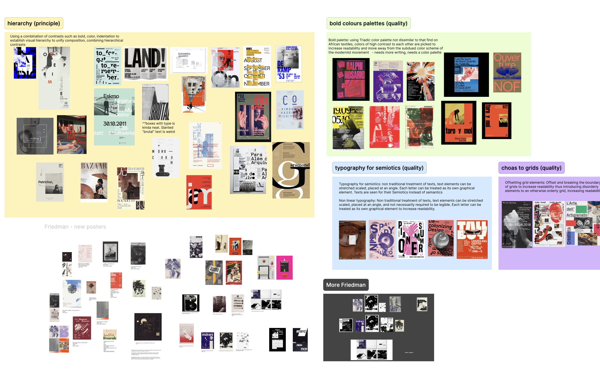

Our team defined a bold design direction for Jazzdor Music Festival, a celebration of contemporary jazz and creative expression. Through extensive visual study, experimentation, and iterative exploration, the festival’s improvisational energy was translated into a structured yet expressive visual language, guided by Dan Friedman’s radical design philosophy.
As lead graphic designer, I drove the visual work and guided our team in shaping a cohesive design system, balancing functionality and expressiveness through key design principles. The resulting design direction captured the energy of jazz culture in Berlin and France, with iterative testing ensuring impact across posters, promotional materials, and contextual mockups.
Jazzdor Festival happens twice a year, promoting diverse forms of jazz. Showcasing diversity and creativity, their mission is to support jazz trends. The festival provides a platform for established and emerging artists, fostering an inclusive environment for jazz enthusiasts.
Visual references of the venue, performances, and featured artists were collected to better understand the festival’s atmosphere and audience. These images capture the festival’s energy, colour palette, and spatial environment, providing insights that informed the tone and mood of the design direction.
Our team studied on the works of Dan Friedman and his design influence in to postmodern and radical design movements. We examined his approach to challenge traditional design systems and analyzed other posters that exemplified Friedman’s qualities to to create expressive but structured compositions, balancing experimentation with visual clarity.
Five key design qualities were identified to guide the design direction:
Unconventional treatment of text, to be stretched, scaled, and rotated, treating each letter as its own graphical element to increase readability
Placing text over an image to separate, enhance, and contrast typography from the composition, emphasizing the message and achieving effective visual communication
Offsetting and breaking grid boundaries, introducing disorderly elements into orderly system to increase readability and unpredictability
Applying combinations of elemental contrasts to establish visual hierarchy and unify the composition
Bold, high-contrast colors to enhance readability and stand out from more muted, traditional color schemes
I conducted a three-part usability study, beginning with open exploration to observe users’ natural behavior, followed by task completion to uncover specific pain points, and concluding with a short interview to gather feedback and highlight usability issues.
I learned the importance of research and empathy in understanding Jazzdor and its audience. Design involves exploring many directions, iterating, refining, and testing solutions, with ongoing room for reflection and growth. This project gave me the chance to explore ideas and refine my work through a thoughtful process. Every milestone, achievement, and even setbacks helped clarify the overall design vision, ensuring each element was grounded in strong principles rather than driven solely by aesthetics.